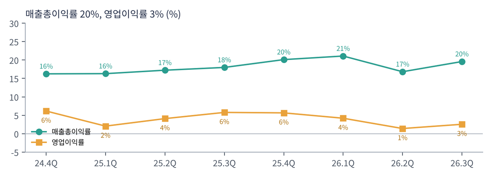

테슬라는 세계 최대 전기차 회사이자 에너지 저장 장치(메가팩·파워월) 회사다. 일론 머스크 CEO는 테슬라를 "자동차 회사가 아니라 AI·로봇 회사"로 정의한다. 실제 매출의 73%는 아직 자동차지만, 시가총액은 미래의 로보택시·옵티머스 가치를 반영한다. 2025년 주주총회에서 승인된 CEO 성과 보상은 누적 차량 인도, FSD 구독자 수, 로보택시 운행 대수 같은 지표에 연동돼 있다.
| 항목 | 내용 |
|---|---|
| 종목 | Tesla, Inc. (TSLA) · 자동차·에너지 · 2003년 설립 · 본사 텍사스주 오스틴 |
| 경영진 | 일론 머스크 CEO / 바이바브 타네자 CFO |
| 시가총액 | 약 $1.42T · PER 444배 (트레이딩뷰, 11/6 종가 기준) |
| 최근 분기(3Q26) | 매출 $280.5억, 영업이익 $7.2억, 순이익 $7.9억 |
| 생산 능력 | 차량 연 250만 대 이상(캘리포니아·상하이·베를린·텍사스), 메가팩 110GWh(캘리포니아·상하이·텍사스) |
| 분기 | 매출 | 자동차 | 에너지 | 매출총이익률 | 영업이익 | 순이익 | 인도(대) |
|---|---|---|---|---|---|---|---|
| 2024.4Q | $257.1억 | $198.0억 | $30.6억 | 16.3% | $15.8억 | $23.2억 | 49.6만 |
| 2025.1Q | $193.4억 | $139.7억 | $27.3억 | 16.3% | $4.0억 | $4.1억 | 33.7만 |
| 2025.2Q | $225.0억 | $166.6억 | $27.9억 | 17.2% | $9.2억 | $11.7억 | 38.4만 |
| 2025.3Q | $281.0억 | $212.1억 | $34.2억 | 18.0% | $16.2억 | $13.7억 | 49.7만 |
| 2025.4Q | $249.0억 | $176.9억 | $38.4억 | 20.1% | $14.1억 | $8.4억 | 41.8만 |
| 2026.1Q | $223.9억 | $162.3억 | $24.1억 | 21.1% | $9.4억 | $4.8억 | 35.8만 |
| 2026.2Q | $282.4억 | $205.2억 | $31.4억 | 16.8% | $4.0억 | $11.1억 | 48.0만 |
| 2026.3Q | $280.5억 | $205.6억 | $28.8억 | 19.6% | $7.2억 | $7.9억 | 48.7만 |

매출은 2년째 제자리, 이익은 줄었다. 분기 매출은 $190~280억 사이를 오가며 계절성을 반복한다. 반면 영업비용은 1년 새 $34억에서 $48억으로 40% 늘었다. 연구개발(초지능 학습, 옵티머스, 사이버캡)과 감가상각이 늘어난 결과다. 매출총이익률은 오히려 18% → 19.6%로 좋아졌는데, 영업이익률은 5.8% → 2.6%로 낮아졌다. 원가 경쟁력이 아니라 미래 투자가 이익을 누르고 있다는 뜻이다.

서비스·기타 매출이 꾸준히 커진다. $28억(4Q24)에서 $46억(3Q26)으로 60% 늘었다. 충전, 보험, 중고차, FSD 구독 등이 포함된다. 에너지 매출은 분기마다 $24~38억으로 들쭉날쭉하지만 회사는 사상 최대 주문 잔고를 강조했다.


현금은 넉넉하다. 2Q26에는 설비투자 $57.9억으로 잉여현금이 -$10.9억이었지만 3분기 다시 +$15.3억으로 돌아왔다. 현금·단기투자 $454억은 부채 걱정 없이 수년간 투자를 이어갈 수 있는 규모다. 오라클·코어위브처럼 빚으로 AI 투자를 하는 회사들과 가장 다른 점이다.
| 지표 | 3Q25 | 4Q25 | 1Q26 | 2Q26 | 3Q26 |
|---|---|---|---|---|---|
| FSD 구독자 | 104만 | 110만 | 128만 | 148만 | 174만 |
| 에너지 저장 설치 | 12.5GWh | 14.2GWh | 8.8GWh | 13.5GWh | 13.7GWh |
| 재고 일수 | 10일 | 15일 | 27일 | 15일 | 11일 |
| 슈퍼차저 커넥터 | 7.4만 | 7.8만 | 8.0만 | 8.2만 | 8.4만 |
회사는 수치 가이던스를 주지 않는다. 대신 "공장 최대 가동", "하드웨어 이익에 초지능·소프트웨어·플릿 기반 이익이 더해지며 가속" 같은 방향만 제시했다.
트레이딩뷰 TSLA 일봉 300개(2025.8 ~ 2026.11.6)와 주봉으로 계산했다. 결론부터 말하면 2025년 12월 고점($499) 이후 1년 가까이 $300~450 사이에서 아래로 기울어진 박스권이다. 이동평균선 5개가 $367~384에 몰려 있어 방향이 정해지지 않았다.


위: 주봉 재구성 차트. 아래: 트레이딩뷰 일봉 캡처(작도 없이 이동평균선·볼린저밴드만 표시).
| 이동평균 | 값 | 종가 대비 | 해석 |
|---|---|---|---|
| 5일선 | $377.9 | -5.2% | 11월 첫 주 급락 반영 |
| 20일선 | $380.4 | -5.8% | |
| 50일선 | $372.1 | -3.7% | |
| 100일선 | $366.8 | -2.3% | 가장 가까운 저항 |
| 200일선 | $383.9 | -6.7% | 50일선이 아래(데드크로스 상태) |
주봉 흐름: 2025년 9~12월 $334 → $499(로보택시·옵티머스 기대) → 2026년 1~4월 $337까지 하락 → 5월 $453 반등 → 7월 22일 2분기 실적 주 -19%, 7/29 $297 연저점 → 8~10월 꾸준히 회복, 10/21 3분기 실적 후 $411 → 11월 첫 주 장중 $338까지 -18% 후 $358 마감.
| 규칙 | 기준 | 현재 값 | 신호 |
|---|---|---|---|
| 장기 추세 필터 | 종가 vs 200일선 | $358.2 < $383.9 | 매도 |
| 중장기 교차 | 50일선 vs 200일선 | $372.1 < $383.9 | 매도 |
| 단기 교차 | 20일선 vs 50일선 | $380.4 > $372.1 | 매수 |
| 돈키언 채널 | 55일 고가 $414.2 / 저가 $338.2 | 중간값 $376.2 아래 | 매도 |
| 1개월 모멘텀 | 21거래일 수익률 | -4.5% (기준 $375.0) | 매도 |
| 3개월 모멘텀 | 63거래일 수익률 | +8.3% (기준 $330.9) | 매수 |
| 6개월 모멘텀 | 126거래일 수익률 | -16.4% (기준 $428.4) | 매도 |
| 12개월 모멘텀 | 252거래일 수익률 | -22.5% (기준 $462.1) | 매도 |
| 종합 (8개 평균) | -0.50 | 매도 | |
해석: 장기 신호(200일선, 6·12개월)는 매도, 단기(20/50 교차, 3개월)는 매수로 엇갈린다. 이동평균선이 모두 $367~384 구간이라 $384를 넘으면 단숨에 점수가 0~+0.25로 오를 수 있다. 14일 ATR $18(5.0%)로 이번 분석 6종목 중 변동성이 가장 낮다.
| 가격 | 무엇이 바뀌나 | 의미 |
|---|---|---|
| $367 ~ 376 | 100·50일선, 돈키언 중간값, 1개월 기준 | 채널·1개월 모멘텀 매수 → 점수 0 |
| $384 | 200일선 | 장기 추세 필터 매수 → 점수 +0.25 |
| $338 이탈 | 55일 저점 | $331(3개월 기준) 이탈 시 점수 -0.75 |
| 구분 | 가격대 | 근거 |
|---|---|---|
| 저항 2 | $410 ~ 430 | 10월 말 고점, 6개월 기준가 |
| 저항 1 | $367 ~ 384 | 이동평균선 5개 밀집 |
| 지지 1 | $331 ~ 338 | 55일 저점, 3개월 기준가 |
| 지지 2 | $297 ~ 310 | 7월 연저점 |
기본 판단: 숫자로는 비싸고, 이야기로는 아직 이르다. 3분기 영업이익 $7억으로 연환산해도 시가총액 $1.4조를 설명할 수 없다. 테슬라 주가는 로보택시 확장 속도, 옵티머스 양산, FSD 승인 국가 확대 같은 '이벤트'로 움직인다. 그래서 기술적 구간 매매가 유효하고, 비중은 작게 가져가는 것이 합리적이다.
| 가격대 | 시나리오 | 대응 |
|---|---|---|
| $420 이상 | 박스 상단 | 2차 익절 |
| $367 ~ 384 | 이동평균선 밀집 | 돌파 시 추가, 실패 시 1차 익절 |
| $331 ~ 358 | 박스 하단 | 분할 매수 80% |
| $318 이하 종가 | 지지 붕괴 | 손절 |
| 사업 | 돈을 버는 방식 | 3Q26 | 비중 |
|---|---|---|---|
| 자동차 | 모델 3·Y 판매(인도의 98%), 사이버트럭, 세미, 규제 크레딧, FSD 일시불 판매 | $205.6억 | 73% |
| 에너지 저장·발전 | 메가팩(전력망·데이터센터용), 파워월(가정용), 태양광 | $28.8억 | 10% |
| 서비스·기타 | 충전, 보험, 중고차, 정비, FSD 구독, 로보택시 운임 | $46.1억 | 16% |
테슬라의 미래 매출은 지금 매출표에 거의 없다. 로보택시 운임은 서비스 매출 안의 아주 작은 부분이고, 옵티머스는 아직 매출이 없다. 회사가 강조하는 '하드웨어 이익 + 소프트웨어·플릿 이익' 구조가 숫자로 보이려면 로보택시가 여러 도시로 확대되고 FSD 구독이 수백만 명 단위로 늘어야 한다. 3분기 FSD 구독자 174만 명은 그 방향으로 가고 있다는 첫 신호다.
3분기 업데이트의 첫 문장이 방향을 말해 준다. "초지능(SI), 로봇, 재생에너지에 걸친 많은 프로젝트에서 강한 모멘텀을 유지했다. 이는 '놀라운 풍요'의 미래를 만드는 데 핵심이다."
| 축 | 내용 |
|---|---|
| 자율주행 | FSD(감독형) 누적 주행 수십억 마일, 무감독 로보택시 주행 거리 전 분기 대비 8배. 9/3부터 오스틴에서 사이버캡 로보택시 운행 |
| 로봇 | 옵티머스 캘리포니아 초기 양산, 텍사스 공장 건설 중 |
| 초지능 컴퓨팅 | 텍사스 Cortex 1·2(225MW 이상) 가동, 연말 400MW 목표. 차량·휴머노이드 자율 소프트웨어 학습용 |
| 반도체·배터리 수직 계열화 | 오스틴 팹(2027년 장비 반입), 4680 셀 40GWh, LFP 셀 네바다 초기 생산, 리튬 정제·양극재 공장 |
| 항목 | 회사의 말 (3Q26) | 읽는 법 |
|---|---|---|
| 자동차 | "FSD가 사용 가능한 시장에서 수요를 이끌고 있다." 승용차 대기 수요 4년 만에 최대. 배터리 가용성이 생산 확대의 제약 | 수요보다 공급(배터리) 문제 |
| 에너지 | 사상 최대 주문·잔고. "에너지 저장은 기존 전력망에 전력을 추가하는 가장 빠른 방법이고 데이터센터 가동에 필수" | AI 데이터센터 수혜 |
| 투자 | 초지능·로봇·에너지 전반에 R&D·설비투자 지속 | 이익률 압박 지속 |
주목할 점은 '수요 둔화' 대신 '배터리 부족'이 등장했다는 것이다. 에너지 저장(메가팩)과 차량이 같은 배터리를 나눠 쓰는데, 데이터센터 수요로 에너지 쪽 주문이 폭증하면서 차량 생산에 쓸 배터리가 모자라는 구조로 보인다. 트레이딩뷰 뉴스는 2027년 중반 사이버트럭 생산을 줄이고 사이버캡 생산을 늘릴 계획이라고 전했다.
매출은 1년 전과 비슷하다. 모델 3·Y가 거의 전부이고 기타 모델 인도는 8,295대(-48%)로 줄었다. 새 로드스터를 10/15 공개했고, 신형 세미가 네바다 양산 라인에서 생산된다.
설치량은 13.7GWh(+10%)지만 매출은 -16%. 가격 인하나 매출 인식 시점 차이로 보인다. 잔고는 최대라 2027년 매출 회복 여지가 있다.
가장 빠르게 크는 부문. FSD 구독, 보험, 충전, 로보택시가 쌓이는 곳이다.
현금·투자 $454억, 2026년 1~9월 설비투자 $130억. 이익은 줄었지만 현금으로 투자를 감당하는 구조다.
| 경쟁/리스크 | 내용 | 강도 |
|---|---|---|
| 밸류에이션 | PER 444배. 로보택시·옵티머스 기대가 꺾이면 하락 폭이 크다 | 높음 |
| 자동차 경쟁 | BYD 등 중국 업체의 가격 경쟁, 유럽 점유율 하락 | 중간~높음 |
| 자율주행 경쟁·규제 | 웨이모 등 로보택시 경쟁, 국가별 FSD 승인 지연 | 중간 |
| 배터리 공급 | 차량·에너지 간 배터리 배분, 생산 확대의 병목 | 중간 |
| 경영 집중도 | 머스크의 다른 회사(스페이스X 등) 활동과 경영 시간 분산 | 참고 |
4분기 인도량(1월 초 발표)과 로보택시 확장 발표가 주가를 움직일 것이다. 실적 자체보다 '다음 이벤트'가 중요하다. 기술적으로는 $384 돌파 여부가 관건이다.
FSD 구독이 수백만 명으로, 로보택시가 여러 도시로 확대되면 이익 구조가 하드웨어에서 소프트웨어로 바뀐다. 그 전환이 늦어지면 PER이 먼저 줄어든다.